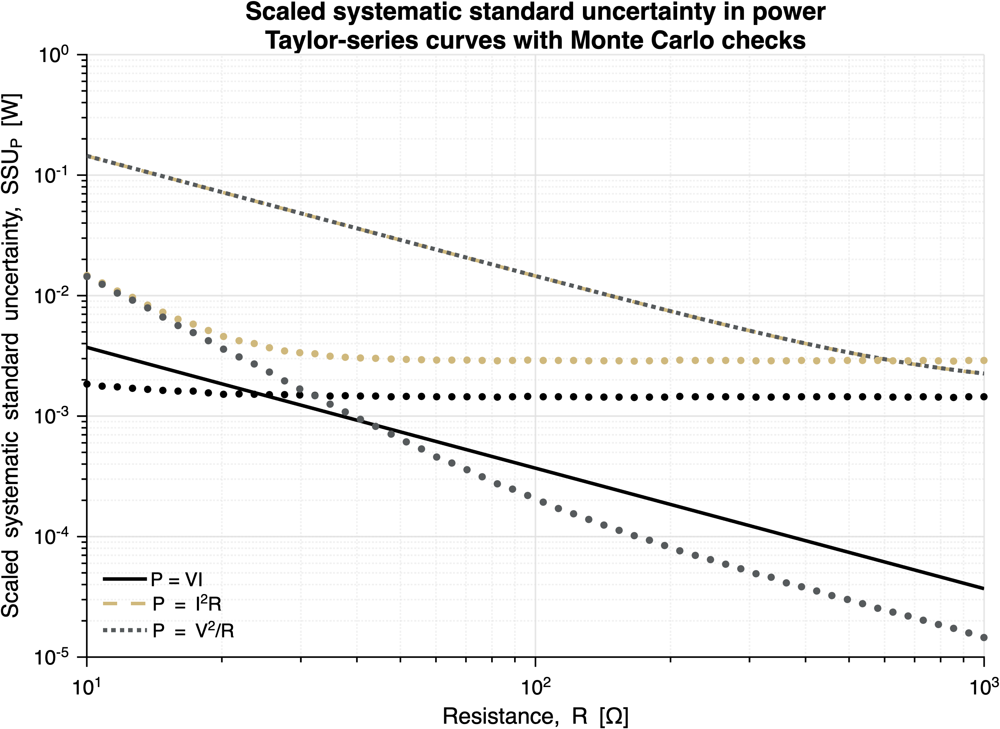
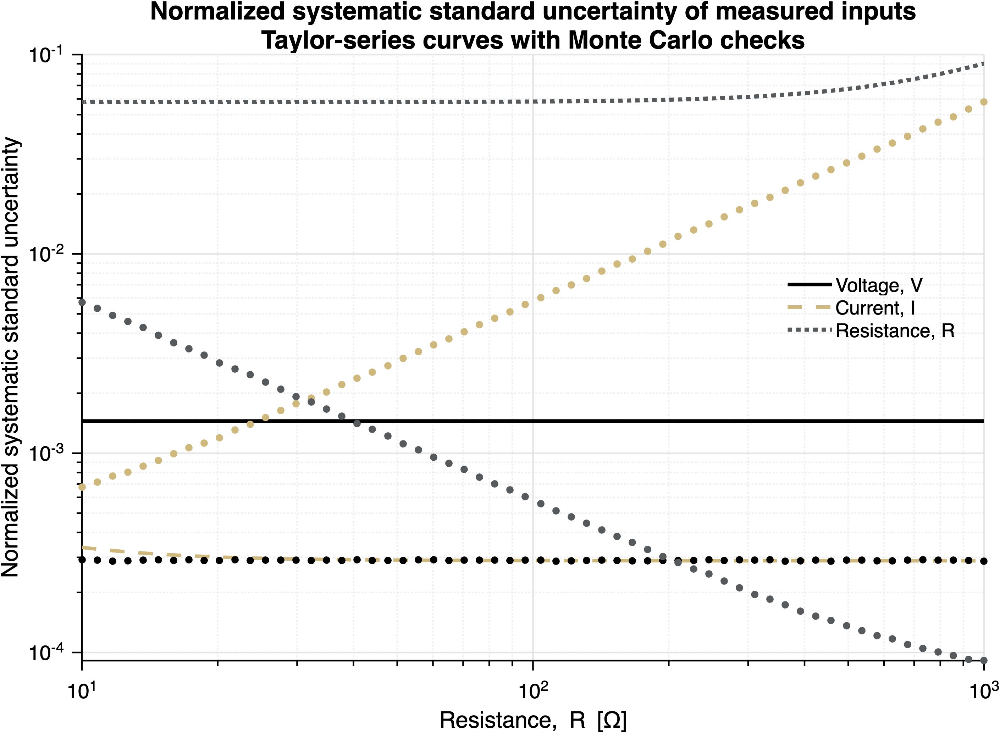
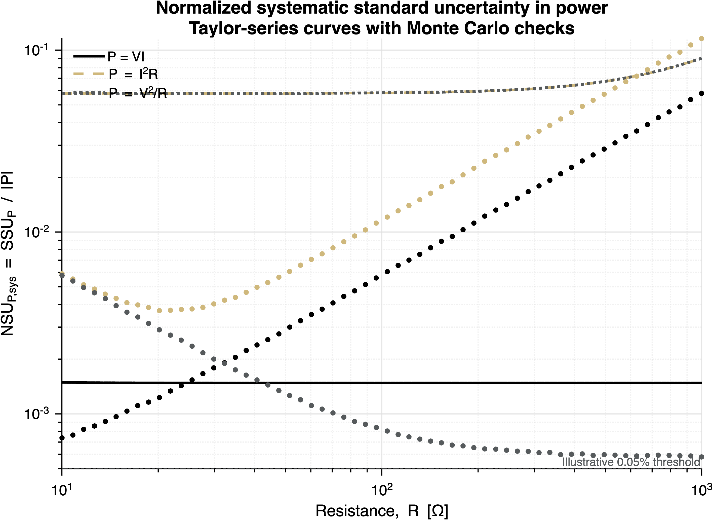

E2 — Tier Assignment
Tier 2 Assignment
Phase II tier assignment covering predictive modeling and comparative validation.
ASEN 3501 - Tier 2 Experimental Investigation
Define the Test Envelope: Predict, Measure, Quantify, Recommend
Role: You are an engineering consultant hired to evaluate an aerospace experiment.
Client question: At what test conditions can this experiment produce results that are reliable enough for its intended use? Which conditions should be avoided, and what improvement(s) to the instrumentation or setup would move the useful test envelope?
Format: Large group, one assigned laboratory branch, four in-person lab working days, two in-person lectures, one technical report, and one short client briefing.
Experiment assignments:
- Aeroelasticity: Test an infinite wing at assigned angles of attack and wind-tunnel velocities, then use the supplied finite-wing dataset to predict tip deflection at its single measured condition.
- Spin Modules: Calibrate the gyro, estimate reaction-wheel and spacecraft-body inertia, estimate rotational resistance, and predict rotational dynamics.
Why Tier 2 is different from Tier 1
Tier 1 focused on understanding an existing experiment and performing pointwise analysis. Tier 2 asks you to evaluate the experiment as a measurement system over a range of possible test conditions.
The central question is no longer only:
> What value did we measure at this condition?
It is:
> How does the quality of the derived result change as the test condition changes, and what > should an engineer do about that?
You will use a physics-based prediction, sensor specifications, calibration information, and measured data to construct a condition-dependent uncertainty envelope. The envelope will show where the experiment is informative and where sensor resolution, calibration, friction, signal processing, or model assumptions make the result difficult to interpret.
The assignment is motivated by the uncertainty-analysis approach used in ASEN 6011, Experimental Fluid Mechanics, taught by Professor John Farnsworth. Students interested in experimental methods, fluid mechanics, aerospace testing, or measurement science are strongly encouraged to consider ASEN 6011. That course develops these ideas in substantially greater depth, both through its assignments and through the broader course sequence.
Learning goals
By the end of Tier 2, you should be able to:
- Build a predictive measurement model before collecting data.
- Trace uncertainty from sensor and DAQ information to an aerospace quantity of interest.
- Explain normalized standard uncertainty using dimensionless sensitivity coefficients.
- Use Monte Carlo analysis to propagate realistic sensor and parameter distributions.
- Identify appropriate and inappropriate test conditions from an uncertainty envelope.
- Propose a specific, quantitatively justified improvement to the experiment that would move the useful test envelope.
- Distinguish measurement uncertainty from model-form discrepancy and setup limitations.
Vocabulary for this assignment
Use the following terms consistently:
- Standard uncertainty: A one-standard-deviation uncertainty estimate for a quantity.
- Relative standard uncertainty: Standard uncertainty divided by the nominal quantity, such as \(u_y/|y|\).
- Condition-dependent uncertainty envelope: A plot of absolute or relative standard uncertainty versus a test condition, such as freestream velocity or applied torque.
- Sensitivity coefficient: The dimensionless factor that describes how a fractional input change affects a fractional output change.
- Useful test envelope: The region where the predicted result has acceptable uncertainty, the hardware is operating within limits, and the model remains appropriate.
The phrase “sensitivity of the uncertainty” is understandable but imprecise. In your report, use condition-dependent uncertainty envelope for the overall plot and dimensionless sensitivity coefficient for the mathematical factors.
Two in-person lectures
Lecture 1 - From Tier 1 pointwise uncertainty to an uncertainty envelope
This lecture makes the cognitive transition from a single Monte Carlo analysis at one data point to an aerospace test-condition study. It introduces:
- the complete measurement chain from physical system to sensor to DAQ to derived result;
- the difference between pointwise random variation and setup-level or calibration errors;
- normalized standard uncertainty;
- dimensionless sensitivity coefficients;
- why a fixed sensor resolution can be insignificant at one condition and dominant at another;
- how to compare Taylor-series propagation and Monte Carlo propagation;
- how an uncertainty curve becomes an engineering recommendation.
The power-measurement bridge in 'TIER2_power_lab_bridge.md' should be completed before or during this lecture.
Lecture 2 - From an uncertainty curve to a test decision
This lecture focuses on engineering judgment. It addresses:
- defining an acceptable test result before collecting data;
- distinguishing low relative uncertainty from physically meaningful or safe operation;
- selecting test points efficiently when lab time is limited;
- separating instrumentation changes from model changes;
- predicting how a sensor range, resolution, calibration, or sampling choice would move the useful test envelope;
- writing a recommendation that a client could act on.
Four-day laboratory plan
The exact scheduling of groups may vary, but the assignment is designed around four in-person working days.
| Day | Common purpose | Expected branch work | Required evidence |
|---|---|---|---|
| 1 | Understand and plan | Inspect setup, confirm sensors and limits, freeze prediction, begin calibration or baseline measurements | Measurement-chain diagram, prediction, initial test matrix |
| 2 | Collect primary data | Wind-tunnel pressure/airspeed data, or gyro and spin-up data | Raw data, field notes, condition log |
| 3 | Complete the model and uncertainty sweep | Finite-wing/deflection analysis, or coast-down/resistance characterization and Monte Carlo sweep | Preliminary uncertainty envelope and identified gaps |
| 4 | Validate and recommend | Targeted repeat/check measurements, finalize comparisons, test or quantify proposed setup change | Final evidence for test-envelope recommendation |
Large groups should divide the work into parallel roles, but every student must understand the complete measurement chain and the final recommendation.
Phase 1 - Consulting brief and pre-test prediction
Before collecting primary data, submit or show the instructor/TA a short prediction brief. This is a working document, not a polished report. It must contain:
- Client objective: What quantity will the client use the experiment to estimate or predict?
- Measurement chain: What physical quantity is measured by each sensor, and how does it enter the data-reduction equation?
- Predicted response: Give numerical values or curves over the planned test range.
- Initial uncertainty envelope: Use the supplied specifications to estimate where the result should be reliable or unreliable.
- Committed test matrix: Identify the conditions you will test and why they are useful.
- Acceptance criterion: Define what agreement between prediction and measurement would be adequate for the stated client objective.
- Risk forecast: Describe one data pattern that would indicate a setup, sensor, or model problem rather than ordinary scatter.
The prediction is frozen when the group begins its primary test. A wrong prediction is useful evidence; silently rewriting it after seeing the data is not.
Phase 2 - Laboratory execution
Follow the branch-specific procedure. During testing:
- record the actual condition, not only the commanded condition;
- record sensor range, units, calibration information, and any changes to the setup;
- note anomalies while they happen;
- preserve raw data and a clear file naming convention;
- use the uncertainty envelope to decide whether a repeat or additional test point is worth the available time;
- do not spend the final lab day collecting points that your own analysis predicts will be dominated by resolution or model limitations unless the purpose is to demonstrate that limitation.
Phase 3 - Required analysis
3.1 Prediction versus measurement
Compare the committed prediction with the measured result. Use residuals or equivalent comparison plots. State whether the acceptance criterion was met and classify important discrepancies as likely measurement variation, calibration or bias, setup effect, data-reduction issue, parameter uncertainty, or model-form discrepancy.
3.2 Condition-dependent uncertainty envelope
For the primary derived quantity, produce both:
- absolute scaled systematic standard uncertainty versus test condition; and
- relative systematic standard uncertainty \(\mathrm{NSU}_{y,\mathrm{sys}}=b_{y,\mathrm{sys}}/|y|\) versus test condition.
Identify:
- the low-uncertainty region;
- the high-uncertainty region;
- the dominant uncertainty source in each region;
- any regions that are physically invalid, unsafe, saturated, or outside model validity.
3.3 Taylor-series and Monte Carlo methods
Use the method required by your branch document. In general, the report should include:
- a normalized sensitivity derivation for the main data-reduction equation;
- a Monte Carlo implementation with at least 10,000 trials per representative condition or a justified convergence study;
- a comparison of the two methods at selected conditions;
- an explanation of any disagreement based on nonlinearity, bounded distributions, shared parameters, or invalid samples.
Monte Carlo is not a substitute for understanding the data-reduction equation. It is a way to propagate the model and uncertainty distributions without manually differentiating every equation.
3.4 Client recommendation and setup modification
Your group must recommend:
- appropriate test conditions;
- inappropriate or low-value test conditions;
- the dominant reason for each decision; and
- at least one specific setup alteration that would move the useful test envelope.
The alteration may involve sensor range, sensor resolution, calibration, signal conditioning, sampling, test-point selection, geometry, or an additional measurement. Estimate the effect of the improvement quantitatively. “Use a better sensor” is not sufficient.
Branch requirements
Aeroelasticity branch
The primary quantity is finite-wing tip deflection predicted from aerodynamic loading, but the student-collected aerodynamic dataset comes from the infinite-wing model. Students will:
- Use the supplied differential-pressure, atmospheric-pressure, and temperature information to calculate freestream velocity and dynamic pressure.
- Test the infinite wing at the assigned angles of attack and wind-tunnel velocities.
- Use the infinite-wing pressure distribution to estimate sectional \(C_l\), lift, and a baseline load distribution.
- Use the instructor-provided finite-wing dataset, collected at one assigned angle of attack and airspeed, to estimate the finite-wing load distribution and predict tip deflection.
- Convert the aerodynamic load distribution to structural loading and tip deflection using the supplied beam equations and geometry.
- Propagate uncertainty to lift and tip deflection as a function of freestream velocity, while treating the finite-wing dataset as a single-condition validation dataset.
- Recommend a useful wind-tunnel velocity and angle-of-attack envelope, plus an instrumentation or setup improvement that would move it.
The Tier 2 experiment uses the PILOT low-speed wind tunnel only. Students are not required to derive the whiffle-tree geometry or repeat the structural derivation; the instructor provides the structural equations and the needed geometry.
Spin-module branch
The primary quantities are calibrated angular rate, reaction-wheel inertia, spacecraft-body inertia, and predicted rotational response.
Students will:
- Calibrate the gyro against the encoder reference over the assigned rate range.
- Use reaction-wheel torque and angular-acceleration data to estimate reaction-wheel inertia.
- Use base-motor torque and spacecraft angular-acceleration data to estimate spacecraft-body inertia.
- Conduct or analyze a coast-down segment to estimate the lumped resistance parameters \(c\) and \(\tau_0\), or use instructor-provided estimates if time or hardware availability requires.
- Use \(I\dot{\omega}+c\omega+\tau_0\operatorname{sgn}(\omega)=\tau_{\mathrm{applied}}\) to predict rotational performance.
- Propagate uncertainty versus applied torque for spin-up and inertia testing, and versus angular rate for gyro or coast-down testing.
- Recommend useful and inappropriate torque/rate conditions and a setup improvement that would move the useful test envelope.
The minimum Tier 2 spin dataset is gyro calibration, multiple reaction-wheel torque trials, multiple base-motor torque trials, and one coast-down or instructor-provided resistance characterization. Torque constants, sample data, exact sensor specifications, and final test limits remain instructor-provided placeholders until verified.
Deliverables
1. Technical report
Submit one group report containing:
- consulting objective and intended use;
- committed pre-test prediction;
- measurement-chain diagram and assumptions;
- test matrix and actual test conditions;
- prediction-versus-measurement comparison;
- normalized sensitivity derivation;
- Monte Carlo method and distribution assumptions;
- absolute and relative uncertainty envelopes;
- dominant-source interpretation;
- appropriate/inappropriate test-condition recommendations;
- one quantitatively justified setup alteration;
- limitations, unresolved placeholders, and conclusion;
- individual contribution statement.
The report should be concise enough that a client could find the recommendation quickly.
2. Client briefing
Prepare one quad chart or equivalent single-page briefing with:
- client question and predicted result;
- uncertainty envelope with useful and inappropriate regions marked;
- comparison with measured data;
- recommended setup change and expected effect;
- final test-envelope recommendation.
Each group gives a short briefing followed by questions. The purpose is technical decision-making, not a complete reproduction of the report.
3. Individual evidence
Each student must be able to explain the measurement chain, the normalized uncertainty, the Monte Carlo result, and the group recommendation. The instructor may use a short individual check or targeted question during the briefing.
Tier 2 Experimental Investigation - Frequently Asked Questions
1. What is the consulting scenario?
Your group is acting as an engineering consulting team. The client wants to know which conditions produce useful data, which conditions should be avoided, and what improvement(s) would improve the experiment.
2. How is this different from Tier 1?
Tier 1 emphasized pointwise analysis. Tier 2 asks you to repeat the uncertainty analysis across a range of test conditions and use the resulting uncertainty envelope to make a test decision.
3. What is the uncertainty envelope?
It is a plot of scaled systematic standard uncertainty or normalized systematic standard uncertainty versus a test condition. Examples include freestream velocity for the wind tunnel and applied torque for spin-up testing.
4. What should we call the new idea?
Use condition-dependent uncertainty envelope for the plot and dimensionless sensitivity coefficient for the mathematical factors. Use relative standard uncertainty for \(\mathrm{NSU}_{y,\mathrm{sys}}=b_{y,\mathrm{sys}}/|y|\) at one condition.
5. Is this an individual or group assignment?
The experiment and report are group work. Every student must understand the full measurement chain and be able to explain the group's uncertainty envelope and recommendation.
6. How much testing do we have?
The assignment is designed for four in-person lab working days. Large groups should divide calibration, data collection, reduction, uncertainty analysis, and documentation tasks in parallel, while preserving shared raw data and decisions.
7. What must be ready before primary testing?
Your group needs a short prediction brief containing the client objective, measurement chain, predicted response, initial uncertainty envelope, committed test matrix, acceptance criterion, and risk forecast.
8. What if the prediction is wrong?
That is useful. The grade is based on whether the prediction was reasoned and specific and whether you diagnose the discrepancy honestly. Do not rewrite the original prediction after seeing the data.
9. Do we need to derive every structural equation?
No. In the aeroelasticity branch, the instructor provides the beam, load-to-deflection, and geometry equations needed to predict tip deflection. Students focus on the aerodynamic measurement chain, the infinite-wing test matrix, the supplied single-condition finite-wing load estimate, uncertainty, and test recommendation.
10. What exactly is required for the aeroelasticity branch?
Test the infinite wing at multiple assigned angles of attack and velocities using pressure, atmospheric, temperature, and angle-of-attack information. Use the supplied finite-wing dataset at one assigned angle of attack and airspeed to predict tip deflection, then determine how uncertainty changes across the approved velocity range.
11. What exactly is required for the spin-module branch?
Calibrate the gyro, estimate reaction-wheel and spacecraft-body inertia from torque trials, and characterize coast-down resistance either experimentally or from instructor-provided data. Then predict rotational response and map uncertainty versus the appropriate rate or torque condition.
12. Should spin-module uncertainty be plotted versus rate or torque?
Use the variable that matches the experiment:
- gyro calibration: angular rate;
- spin-up/inertia testing: applied torque or motor current;
- coast-down: angular rate.
For spin-up, applied torque is usually the better design variable because it is controlled, while angular rate is a response.
13. Can Monte Carlo replace partial derivatives?
Monte Carlo can replace manual derivative calculations for the numerical propagation, but you still need to state the data-reduction equation and explain the input distributions. Compare Monte Carlo with the normalized Taylor result at representative conditions.
14. How many Monte Carlo samples should we use?
Use at least 10,000 trials per representative condition unless a convergence study justifies a different number. Check that the reported standard deviation or percentile interval is stable when the sample count increases.
15. Do we redraw systematic errors for every time sample?
Usually no. A calibration, scale-factor, or fixed offset error is shared across a virtual experiment. Draw it once for that experiment. Redraw sample-to-sample noise only when the model is intended to represent random measurement noise.
16. What makes a setup change convincing?
Name the affected measurement or parameter, identify the limitation, estimate how the uncertainty envelope changes, and explain why the change is feasible. “Use a better sensor” is not enough.
17. What if a sensor specification or sample dataset is missing?
Use the clearly labeled instructor placeholder and state how the missing information affects your conclusion. Do not invent a sensor specification or torque constant.
18. What should the client briefing show?
Show the client question, predicted result, measured comparison, uncertainty envelope with useful and inappropriate regions marked, recommended setup alteration, and final test-envelope recommendation.
19. Why mention ASEN 6011?
The assignment is motivated by the uncertainty-analysis perspective used in Professor John Farnsworth's ASEN 6011 Experimental Fluid Mechanics course. Students who want a deeper treatment of uncertainty propagation, experimental fluid mechanics, and measurement-system design are encouraged to consider taking ASEN 6011.
ASEN 3501 - Tier 2 FAQ | Working draft
ASEN 3501 - Tier 2 Student Rubric
What a successful report demonstrates
Your report should read like a short engineering consulting recommendation. A reader should be able to identify the useful test envelope, the evidence supporting it, and the setup change that would improve it.
| Section | Minimum evidence | Strong evidence |
|---|---|---|
| Client objective | States the quantity of interest and intended use | Explains what precision is needed for that use |
| Prediction | Gives a numerical model-based prediction before testing | Includes expected curve shape, magnitude, and dominant pre-test uncertainty |
| Measurement chain | Connects physical quantity, sensor, DAQ, and data reduction | Identifies where fixed, proportional, calibration, and repeatability terms enter |
| Test execution | Preserves raw data, actual conditions, limits, and anomalies | Uses the emerging analysis to select informative repeat/check conditions |
| Prediction comparison | Compares measured and predicted values numerically | Uses residuals and distinguishes measurement, setup, parameter, and model-form causes |
| Normalized uncertainty | Shows the main sensitivity relation and defines relative standard uncertainty | Explains the result using dimensionless sensitivity coefficients |
| Monte Carlo | Uses defensible distributions and a convergence check | Explains why Monte Carlo and Taylor results agree or differ |
| Uncertainty envelope | Shows absolute and relative uncertainty versus condition | Marks useful, marginal, invalid, unsafe, and dominant-source regions |
| Recommendation | Names appropriate and inappropriate conditions | Connects every boundary to evidence and the client objective |
| Setup alteration | Names a specific feasible change | Quantitatively predicts how it moves the uncertainty envelope |
| Communication | Includes a readable report and client briefing | A client can find the recommendation without reading every derivation |
Branch-specific minimums
Aeroelasticity
Include:
- freestream velocity/dynamic-pressure prediction from the pressure, atmospheric, temperature, and angle-of-attack measurements;
- infinite-wing sectional lift estimate across the assigned angle-of-attack and velocity matrix;
- finite-wing/spanwise load estimate from the supplied dataset at one assigned angle of attack and airspeed;
- supplied structural calculation for tip deflection at the finite-wing condition;
- uncertainty propagated to lift and tip deflection;
- comparison with measured data;
- velocity-dependent test recommendation.
Whiffle-tree derivation and complete structural redesign are outside the required scope.
Spin modules
Include:
- gyro calibration against the encoder;
- reaction-wheel inertia from torque/acceleration trials;
- spacecraft-body inertia from base-motor torque/acceleration trials;
- coast-down resistance characterization or explicit use of instructor-provided parameters;
- predicted rotational response from the full model;
- uncertainty versus angular rate and/or applied torque, as assigned;
- torque/rate test recommendation.
Panel comparison, saturation-time analysis, and complete controller design are outside the required scope unless assigned as enrichment.
Pass conditions
The group passes when:
- the original prediction is preserved;
- the uncertainty envelope is numerically supported;
- the Monte Carlo method is reproducible and physically justified;
- the group identifies appropriate and inappropriate conditions;
- the setup alteration is specific and quantitative; and
- every student can explain the group's recommendation.
ASEN 3501 - Tier 2 Student Rubric | Working draft
Tier 2 Student Guide - From Pointwise Uncertainty to a Test Envelope
The question Tier 2 adds
In Tier 1, you often asked: what is the uncertainty in this result at this data point? In Tier 2, ask: how does the uncertainty change when the test condition changes?
Examples include airspeed uncertainty versus freestream velocity, tip-deflection uncertainty versus wind-tunnel velocity, inertia or angular-acceleration uncertainty versus applied torque, and gyro-rate uncertainty versus angular rate.
The output is a condition-dependent uncertainty envelope: a curve showing the uncertainty of a derived quantity across a useful range of test conditions.
Keep three quantities separate
- Measured inputs: quantities such as voltage, differential pressure, current, resistance, angular rate, or encoder angle.
- Derived output: a quantity calculated from the inputs, such as power, airspeed, lift, inertia, or tip deflection.
- Test condition: the quantity varied or used to organize the study, such as resistance, freestream velocity, applied torque, or angular rate.
The uncertainty in the derived output is not necessarily constant as the test condition changes.
From Taylor-series propagation to normalized uncertainty
Suppose the derived quantity is
\[ y=f(x_1,x_2,\ldots,x_n). \]
For systematic standard uncertainties in the inputs, the first-order Taylor-series estimate is
\[ b_{y,\mathrm{sys}}^2 \approx \sum_i\left(\frac{\partial y}{\partial x_i}b_{x_i,\mathrm{sys}}\right)^2, \]
When the input uncertainties are treated as independent. If a covariance matrix is supplied, add the appropriate covariance terms instead of assuming independence.
Here \(b_{x_i,\mathrm{sys}}\) means the systematic standard uncertainty assigned to input \(x_i\). It may combine accuracy, calibration, resolution, quantization, gain, offset, or other setup-level components.
Step 1: Divide by the nominal output magnitude
The absolute result \(b_{y,\mathrm{sys}}\) has the units of \(y\). Divide by the nominal output magnitude \(|y|\) to obtain a dimensionless output uncertainty:
\[ \frac{b_{y,\mathrm{sys}}}{|y|} \approx \frac{1}{|y|}\sqrt{\sum_i\left(\frac{\partial y}{\partial x_i}b_{x_i,\mathrm{sys}}\right)^2}. \]
For one input contribution, insert \(|x_i|/|x_i|=1\) so the input uncertainty is also written in normalized form:
\[ \frac{\left|\frac{\partial y}{\partial x_i}\right|b_{x_i,\mathrm{sys}}}{|y|} = \left|\frac{x_i}{|y|}\frac{\partial y}{\partial x_i}\right| \frac{b_{x_i,\mathrm{sys}}}{|x_i|}. \]
This is the normalization step that is easy to skip when it is written too compactly. The factor \(x_i/|x_i|\) is only a sign factor. Because uncertainty contributions are squared, the sign does not affect the combined standard uncertainty, but it does matter when interpreting whether an input increase makes the output increase or decrease.
Step 2: Define the dimensionless sensitivity coefficient
Define the signed dimensionless sensitivity coefficient as
\[ S_i=\frac{x_i}{y}\frac{\partial y}{\partial x_i}. \]
It describes the local fractional response of the model:
\[ \frac{\Delta y}{y}\approx S_i\frac{\Delta x_i}{x_i}. \]
The magnitude \(|S_i|\) is used when ranking uncertainty contributions. For independent inputs, the normalized systematic standard uncertainty is therefore
\[ \mathrm{NSU}_{y,\mathrm{sys}} = \frac{b_{y,\mathrm{sys}}}{|y|} \approx \sqrt{\sum_i\left[S_i\frac{b_{x_i,\mathrm{sys}}}{|x_i|}\right]^2}. \]
For a particular input, define its normalized contribution to the output as
\[ \mathrm{NSU}_{x_i\rightarrow y} = |S_i|\frac{b_{x_i,\mathrm{sys}}}{|x_i|}. \]
This separates two ideas:
- \(S_i\) is the sensitivity of the data-reduction equation.
- \(b_{x_i,\mathrm{sys}}/|x_i|\) is the relative quality of the measurement at the current test condition.
Step 3: Scale the normalized result back to output units
The normalized curve is dimensionless, but a client also needs to know the expected uncertainty in the units of the reported result. Multiply by the nominal output magnitude:
\[ \mathrm{SSU}_{y,\mathrm{sys}}(q) = |y(q)|\,\mathrm{NSU}_{y,\mathrm{sys}}(q) = b_{y,\mathrm{sys}}(q), \]
where \(q\) is the test condition. We will call \(\mathrm{SSU}_{y,\mathrm{sys}}\) the scaled systematic standard uncertainty. It has the units of the output: m/s for airspeed, N for lift, m for deflection, kg·m² for inertia, or W for power.
The two plots answer different questions:
- \(\mathrm{NSU}_{y,\mathrm{sys}}(q)\) asks, “What fraction of the result is uncertain?”
- \(\mathrm{SSU}_{y,\mathrm{sys}}(q)\) asks, “How large is the uncertainty in physical units?”
What do you do with the sensitivity coefficients?
For each test condition:
- Evaluate the nominal inputs and the nominal output from the data-reduction equation.
- Calculate or estimate the systematic standard uncertainty of each input.
- Calculate \(S_i\) for every input that appears in the equation.
- Calculate each \(\mathrm{NSU}_{x_i\rightarrow y}\) contribution.
- Combine the contributions by root-sum-square to obtain \(\mathrm{NSU}_{y,\mathrm{sys}}\).
- Multiply by \(|y|\) to obtain \(\mathrm{SSU}_{y,\mathrm{sys}}\) in output units.
- Repeat over the full test-condition range and plot both curves.
The low point in the scaled curve is not automatically the best test condition. A useful condition must also be physically valid, safe, within the instrument range, relevant to the client question, and supported by a model that still applies.
Example of the interpretation
Suppose a sensor has a fixed resolution uncertainty \(a_x\) and a proportional accuracy \(g_x|x|\). If \(a_x\) is the full width of a rectangular resolution interval, a convenient standard-uncertainty model is
\[ b_{x,\mathrm{sys}}=\sqrt{\left(\frac{a_x}{\sqrt{12}}\right)^2+\left(g_x|x|\right)^2}. \]
Then
\[ \frac{b_{x,\mathrm{sys}}}{|x|} = \sqrt{\left(\frac{a_x}{\sqrt{12}|x|}\right)^2+g_x^2}. \]
At small signal magnitude, the fixed-resolution term dominates. At larger signal magnitude, the proportional term becomes more important. That transition often creates a low-uncertainty region in the test envelope.
Monte Carlo connection
Monte Carlo uses the same measurement model without requiring every partial derivative. For each nominal test condition:
- Set the centers of the input distributions to the nominal values.
- Draw one plausible value for each uncertain input.
- Evaluate the data-reduction equation.
- Repeat many times.
- Compute the output standard deviation and divide by the nominal output magnitude.
- Repeat for the full test-condition range.
For a proportional Gaussian error and a bounded rectangular resolution error, one synthetic measurement can be represented as
\[ x^*=x+g_x|x|Z+\frac{a_x}{2}U, \]
where \(Z\) is a standard normal draw and \(U\) is a uniform draw between \(-1\) and \(1\). The standard deviation of the resulting output samples estimates \(\mathrm{SSU}_{y,\mathrm{sys}}\); dividing by \(|y|\) estimates \(\mathrm{NSU}_{y,\mathrm{sys}}\).
Monte Carlo does not eliminate the need to define what each distribution means. Use a common draw for a setup-level calibration bias across a virtual experiment when that bias should remain correlated across samples; do not redraw that bias independently at every time sample.
The Taylor-series and Monte Carlo curves should agree when the uncertainties are small and the model is locally linear. Differences can occur when the uncertainty is large, the distributions are bounded, the output is near zero, inputs are correlated, or the model is strongly nonlinear.
How to turn the curves into a test decision
For each region of the plot, identify the dominant input contribution, compare the output uncertainty with the client’s acceptance criterion, check hardware and model limits, and decide whether an additional test point would be useful. Then propose a specific improvement, such as a different sensor range, improved resolution, a better calibration, a different sampling strategy, or an additional measurement. Quantify how the proposed improvement changes the two curves.
Use relative standard uncertainty only for a value at one condition, condition-dependent uncertainty envelope for the curve over a range of conditions, scaled systematic standard uncertainty for the output-unit curve, and dimensionless sensitivity coefficient for the model factor \(S_i\). Avoid using \(r\) for relative uncertainty in this assignment because \(R\) is also used for electrical resistance.
Student support document - Tier 2 working draft
Tier 2 Student Guide - The Power Lab as a Bridge to a Test Envelope
This example connects the familiar power lab measurement to the Tier 2 question: how does the uncertainty change when the test condition changes? Here the test condition is the resistance. The resistance can be changed by replacing the load resistor while the electrical measurement system remains the same.
Start with three valid power data-reduction equations
For a resistor with voltage \(V\), current \(I\), and resistance \(R\), the same nominal power can be written three ways:
\[ P_1=VI,\qquad P_2=I^2R,\qquad P_3=\frac{V^2}{R}. \]
These are physically equivalent when \(V=IR\), but they do not have the same uncertainty propagation because each equation uses a different pair of measured quantities.
For any data-reduction equation \(y=f(x_1,x_2,\ldots)\), define the signed dimensionless sensitivity coefficient by
\[ S_{x_i}=\frac{x_i}{y}\frac{\partial y}{\partial x_i}. \]
Apply that definition to each power equation. For \(P_1=VI\),
\[ \frac{\partial P_1}{\partial V}=I,\qquad \frac{\partial P_1}{\partial I}=V,\qquad \frac{\partial P_1}{\partial R}=0, \]
so
\[ S_V=\frac{V}{P_1}I=1,\qquad S_I=\frac{I}{P_1}V=1,\qquad S_R=\frac{R}{P_1}(0)=0. \]
For \(P_2=I^2R\),
\[ \frac{\partial P_2}{\partial V}=0,\qquad \frac{\partial P_2}{\partial I}=2IR,\qquad \frac{\partial P_2}{\partial R}=I^2, \]
so
\[ S_V=0,\qquad S_I=\frac{I}{P_2}(2IR)=2,\qquad S_R=\frac{R}{P_2}I^2=1. \]
For \(P_3=V^2/R\),
\[ \frac{\partial P_3}{\partial V}=\frac{2V}{R},\qquad \frac{\partial P_3}{\partial I}=0,\qquad \frac{\partial P_3}{\partial R}=-\frac{V^2}{R^2}, \]
so
\[ S_V=\frac{V}{P_3}\frac{2V}{R}=2,\qquad S_I=0,\qquad S_R=\frac{R}{P_3}\left(-\frac{V^2}{R^2}\right)=-1. \]
The resulting dimensionless sensitivity coefficients are summarized below:
\[ \begin{array}{c|ccc} \text{data-reduction equation} & S_V & S_I & S_R\\ \hline P_1=VI & 1 & 1 & 0\\ P_2=I^2R & 0 & 2 & 1\\ P_3=V^2/R & 2 & 0 & -1 \end{array} \]
For example, \(S_R=-1\) in \(P_3=V^2/R\) means that a fractional increase in \(R\) produces an approximately equal fractional decrease in \(P_3\), holding \(V\) fixed. The negative sign disappears when that contribution is squared in an uncertainty budget.
For this simplified bridge example, use unequal manufacturer half-widths for the proportional part of each measurement uncertainty:
\[ h_V=0.005\%=5.0\times 10^{-5},\qquad h_I=0.06\%=6.0\times 10^{-4},\qquad h_R=0.012\%=1.2\times 10^{-4}. \]
Interpret each value as a bounded manufacturer statement of \(\pm h_x|x|\). Because the uncertainty budget uses standard uncertainties, a rectangular half-width is converted using
\[ u_x=\frac{h_x}{\sqrt{3}}. \]
The percentage values are not assumed to be equal. The fixed sensor contributions are introduced after the resistance is selected as the changing test condition, because their effect depends on the magnitude of the measured signal.
Make resistance the changing test condition
Choose a voltage level \(V_0\) that is safe for the circuit and use a set of resistors spanning the intended test range. For an illustrative constant-voltage study,
\[ V(R)=V_0,\qquad I(R)=\frac{V_0}{R},\qquad P(R)=\frac{V_0^2}{R}. \]
The actual laboratory may have a different source behavior. Use the measured or instructor-provided \(V(R)\) and calculate the nominal current and power from the selected model. The important point is that \(R\) is the independent test condition, while \(V\), \(I\), and \(P\) generally change with \(R\).
Assign systematic standard uncertainties to the instruments
Use the supplied specifications to construct an uncertainty model for each measured variable. In addition to the percentage-of-reading manufacturer half-width, include a fixed sensor contribution. This fixed term approximates reading-independent effects such as resolution, digitization, quantization, or a sensor noise floor.
\[ b_{V,\mathrm{sys}}(R) =\frac{1}{\sqrt{3}}\sqrt{\left(h_V|V(R)|\right)^2+d_V^2}, \qquad h_V=0.005\%, \]
\[ b_{I,\mathrm{sys}}(R) =\frac{1}{\sqrt{3}}\sqrt{\left(h_I|I(R)|\right)^2+d_I^2}, \qquad h_I=0.06\%, \]
\[ b_{R,\mathrm{sys}}(R) =\frac{1}{\sqrt{3}}\sqrt{\left(h_R|R|\right)^2+d_R^2}, \qquad h_R=0.012\%. \]
For illustration, use \(d_V=0.0025\ \mathrm{V}\), \(d_I=0.0005\ \mathrm{A}\), and \(d_R=0.10\ \Omega\). These are placeholder fixed half-widths, not specifications for the actual laboratory. The factor \(1/\sqrt{3}\) converts the combined rectangular half-width to a standard uncertainty. No additional generic accuracy coefficient is being added.
The normalized systematic uncertainties of the inputs are
\[ n_V(R)=\frac{b_{V,\mathrm{sys}}(R)}{|V(R)|},\qquad n_I(R)=\frac{b_{I,\mathrm{sys}}(R)}{|I(R)|},\qquad n_R(R)=\frac{b_{R,\mathrm{sys}}(R)}{|R|}. \]
The percentage terms approach a constant floor when the measured signal is large. The fixed terms become increasingly important when the signal is small. For this constant-voltage sweep, current decreases as \(R\) increases, so \(n_I\) rises with \(R\); resistance becomes easier to measure fractionally as \(R\) increases, so \(n_R\) falls with \(R\). Those competing trends can create a bucket-shaped normalized uncertainty curve.
Produce the normalized and scaled power curves
For each candidate data-reduction equation, multiply the input normalized uncertainty by the magnitude of its sensitivity coefficient:
\[ n_{V\rightarrow P_1}=n_V,\qquad n_{I\rightarrow P_1}=n_I, \]
\[ n_{I\rightarrow P_2}=2n_I,\qquad n_{R\rightarrow P_2}=n_R, \]
\[ n_{V\rightarrow P_3}=2n_V,\qquad n_{R\rightarrow P_3}=n_R. \]
Combine the active contributions by root-sum-square:
\[ \mathrm{NSU}_{P_1,\mathrm{sys}}(R)=\sqrt{n_V^2+n_I^2}, \]
\[ \mathrm{NSU}_{P_2,\mathrm{sys}}(R)=\sqrt{(2n_I)^2+n_R^2}, \]
\[ \mathrm{NSU}_{P_3,\mathrm{sys}}(R)=\sqrt{(2n_V)^2+n_R^2}. \]
These are the normalized systematic standard uncertainty curves. They answer: what fraction of the reported power is uncertain at each resistance?
Scale each normalized curve by the nominal power:
\[ \mathrm{SSU}_{P_k,\mathrm{sys}}(R)=|P_k(R)|\,\mathrm{NSU}_{P_k,\mathrm{sys}}(R),\qquad k\in\{1,2,3\}. \]
These are the scaled systematic standard uncertainty curves. They answer: how many watts of uncertainty should be attached to the reported power at each resistance?
Monte Carlo version of the same power study
The Monte Carlo analysis uses the same uncertainty model as the Taylor-series analysis, but it propagates simulated measurements through the power equations directly. At each resistance, generate a large population of possible measured values. For each input, include both a percentage-of-reading perturbation and an independent fixed-term perturbation:
\[ V^{\ast}=V+h_V|V|\xi_{V,1}+d_V\xi_{V,2}. \]
\[ I^{\ast}=I+h_I|I|\xi_{I,1}+d_I\xi_{I,2}. \]
\[ R^{\ast}=R+h_R|R|\xi_{R,1}+d_R\xi_{R,2}. \]
where every \(\xi\) is an independent draw from a uniform distribution on \([-1,1]\). The two perturbations for each input are independent because they represent different uncertainty sources. The corresponding simulated powers are
\[ P_1^{\ast}=V^{\ast}I^{\ast},\qquad P_2^{\ast}=(I^{\ast})^2R^{\ast},\qquad P_3^{\ast}=\frac{(V^{\ast})^2}{R^{\ast}}. \]
At each resistance, calculate the sample standard deviations:
\[ \mathrm{SSU}^{\mathrm{MC}}_{P_k,\mathrm{sys}}(R) =\operatorname{std}\!\left(P_k^{\ast}\right), \qquad \mathrm{NSU}^{\mathrm{MC}}_{P_k,\mathrm{sys}}(R) =\frac{\mathrm{SSU}^{\mathrm{MC}}_{P_k,\mathrm{sys}}(R)}{|P_k(R)|}. \]
Use this workflow across the full resistance sweep:
- Set the nominal \(V(R)\), \(I(R)\), and \(R\).
- Draw independent bounded uniform values for each proportional and fixed contribution.
- Construct \(V^{\ast}\), \(I^{\ast}\), and \(R^{\ast}\) for every Monte Carlo trial.
- Evaluate \(P_1^{\ast}\), \(P_2^{\ast}\), and \(P_3^{\ast}\).
- Compute SSU and NSU from the simulated populations.
- Plot the Monte Carlo estimates over the Taylor-series curves.
The accompanying MATLAB script performs this resistance sweep and produces the plotted Monte Carlo comparisons. The Monte Carlo points should follow the Taylor-series curves when the assumptions are consistent. Small differences are expected because the Monte Carlo results are estimated from a finite number of trials and because the power equations are nonlinear.
Use independent draws only when the physical uncertainty sources are independent. If the same calibration error affects multiple readings, preserve that correlation in the Monte Carlo model. The bounded uniform sampling here is a deliberate simplification that matches the manufacturer half-width assumption; it is not a replacement for the actual uncertainty distributions in the Tier 2 laboratory.
Optional MATLAB reproduction
The assignment already provides the three illustrative plots below; you are not required to generate them for your report. The complete, presentation-quality script is available here: open matlab_code.m. You may also download the raw MATLAB file and run or modify it locally. Replace the illustrative instrument values only if you want to explore a different sensor model.
The first plot is the scaled systematic standard uncertainty in power versus resistance. The second plot compares normalized systematic uncertainties in the three measured quantities \(V\), \(I\), and \(R\). The third plot shows how the data-reduction equation weights those input uncertainties. Each plot includes Taylor-series curves and Monte Carlo estimates.
Pre-generated MATLAB plots
The following plots use the illustrative manufacturer half-widths and fixed sensor contributions in the accompanying MATLAB example. They are provided so you can focus on interpreting the uncertainty curves and the resulting test-envelope recommendation. The values are examples, not specifications for the actual laboratory instruments.



What the plots mean
The fixed sensor contribution creates the curvature. At low signal levels, resolution and digitization can dominate the percentage uncertainty; at larger signal levels, the percentage-of-reading term becomes the limiting floor. In the \(P_2=I^2R\) expression, the current contribution grows with resistance while the resistance contribution decreases, producing a bucket-shaped region of lower normalized uncertainty. The best test region is where the scaled power uncertainty is acceptably small, the normalized uncertainty is below the client threshold, the electrical limits are satisfied, and the selected data-reduction equation is appropriate.
Do not choose a resistor only because it minimizes relative uncertainty. A very high resistance may produce too little current for the ammeter, while a very low resistance may exceed the source or resistor power rating.
The Tier 2 translation
| Power example | Aeroelasticity | Spin Modules |
|---|---|---|
| Test condition \(R\) | Freestream velocity or angle of attack | Applied torque or angular rate |
| Measured inputs \(V,I,R\) | Differential pressure, atmospheric pressure, temperature, angle of attack | Current, gyro rate, encoder rate, motor torque constant |
| Derived output \(P\) | Airspeed, lift, or finite-wing tip deflection | Angular acceleration, inertia, or predicted rate |
| Low-signal problem | Small differential pressure at low speed | Small net torque or low gyro rate |
| Improvement | Pressure-sensor range, resolution, calibration, or sampling | Current/torque range, gyro calibration, sampling, or resistance characterization |
The analysis is not complete until the group identifies the dominant input, marks the useful and inappropriate regions, and proposes a specific improvement that moves the test envelope.
Student support document - Tier 2 working draft